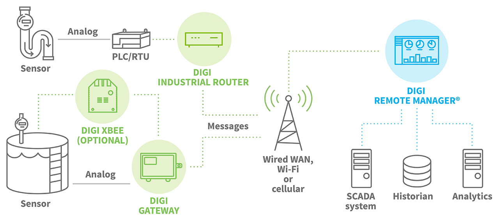
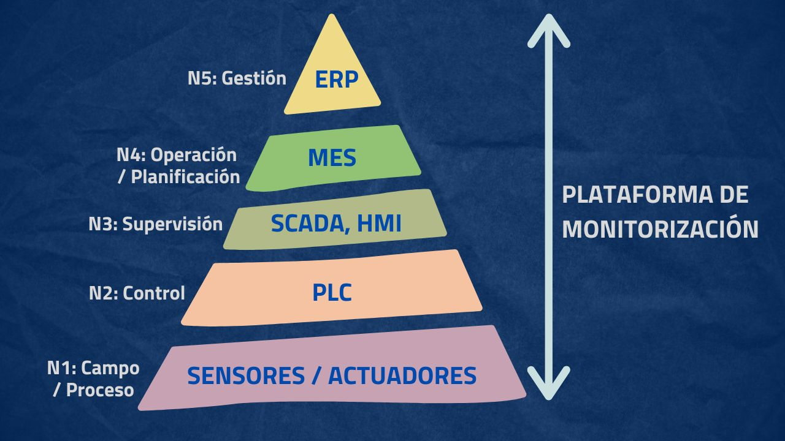
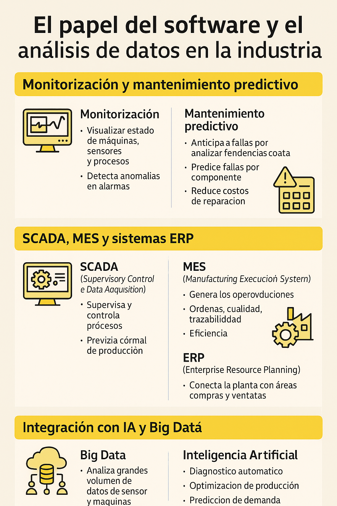
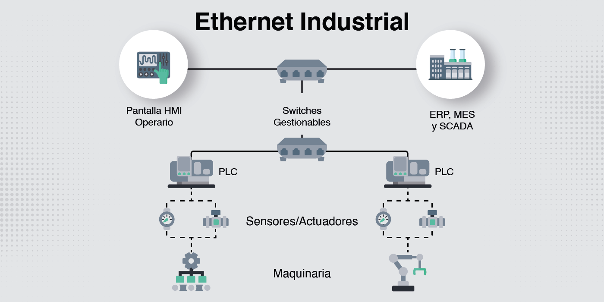
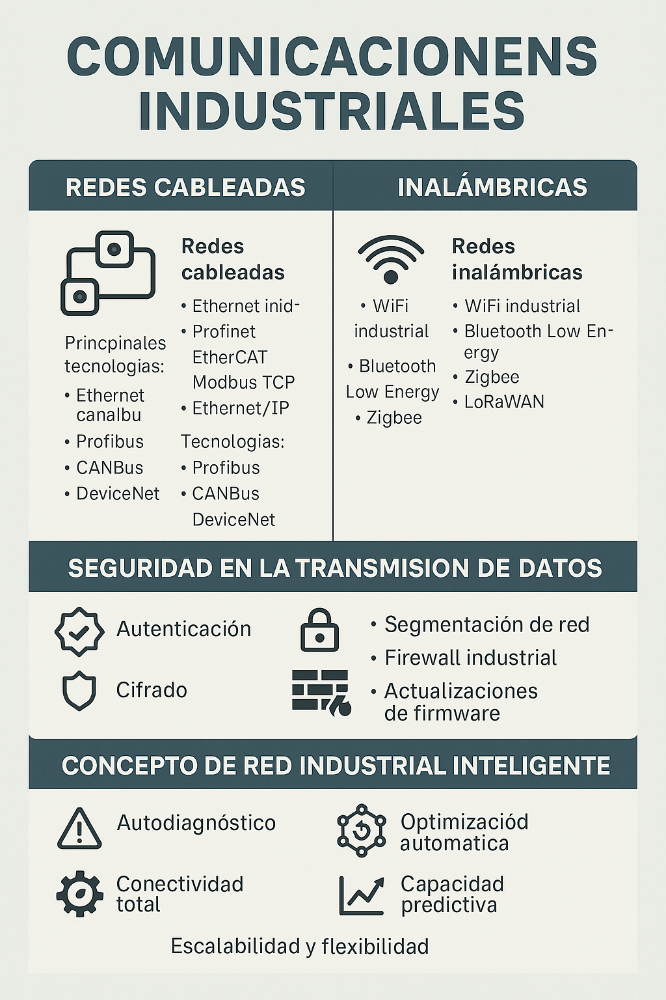

UD2. Cuarta Revolución Industrial
Sesión 3. IoT, software y comunicaciones industriales.
3.1 El Internet de las Cosas (IoT)
El Internet de las Cosas es un modelo tecnológico basado en conectar objetos físicos a la red para que puedan captar información del entorno, procesarla y enviarla a otros sistemas.
- Estos objetos incluyen sensores, actuadores, máquinas, vehículos, equipos industriales y dispositivos cotidianos.
En el ámbito industrial, este concepto se integra en lo que se conoce como Industria 4.0. El objetivo es disponer de datos en tiempo real para mejorar la eficiencia, la calidad, la seguridad y la toma de decisiones.
- Estructura básica del IoT (sensor → red → nube)

Aunque existe una gran variedad de arquitecturas, toda solución IoT industrial se basa en tres etapas principales:
1. Captación de datos: sensores y dispositivos físicos
Son los elementos que detectan variables del entorno o de una máquina.
Los más habituales en industria son:
- Temperatura
- Humedad
- Vibraciones
- Corriente eléctrica
- Presión de fluidos
- Posición y movimiento
- Nivel de llenado de depósitos
- Estado de compuertas o válvulas
También se incluyen actuadores que permiten intervenir, como motores, servos, válvulas o relés.
2. Comunicación mediante red industrial
Los datos se transmiten desde los sensores a otros dispositivos, como controladores, pasarelas o sistemas centrales.
Las redes habituales en entornos industriales pueden ser:
- Redes cableadas Ethernet industrial
- Redes inalámbricas como WiFi industrial, Bluetooth Low Energy o Zigbee
- Redes LPWAN como LoRaWAN para larga distancia y bajo consumo
- Protocolos específicos de control industrial como Modbus TCP, Profinet o OPC UA
Estos sistemas deben ser robustos, fiables y seguros, ya que la información puede ser crítica para el proceso productivo.
3. Almacenamiento y procesamiento en servicios en la nube o en servidores locales
Los datos llegan a una plataforma en la nube o a un servidor industrial donde se pueden:
- Almacenar en bases de datos
- Visualizar en paneles o cuadros de mando
- Detectar patrones y optimizar procesos
- Generar alertas o notificaciones
- Ejecutar algoritmos de análisis predictivo
La nube permite escalar fácilmente y conectar múltiples plantas o instalaciones. En algunos casos se emplea computación en el borde, que procesa parte de la información en la propia fábrica para reducir latencia.
4. Ejemplos de IoT en entornos industriales
1. Mantenimiento predictivo en maquinaria
Sensores de vibración o temperatura instalados en motores y rodamientos permiten anticipar averías.
Ejemplo práctico: Un sensor detecta un incremento anormal de vibración en un motor. La plataforma IoT genera una alerta y el sistema de mantenimiento programa la intervención antes de que se produzca una avería.
2. Monitorización de consumo energético
Contadores conectados permiten analizar el uso de electricidad, gas o agua en tiempo real.
Ejemplo: En una línea de producción, los consumos se registran y se comparan entre turnos. Se detecta una pérdida energética durante las horas valle y se ajustan los horarios para reducir costes.
3. Control de calidad automatizado
Cámaras y sensores verifican que los productos cumplen estándares.
Ejemplo: En una planta de envasado, un sensor óptico detecta envases defectuosos y activa un actuador que los expulsa automáticamente.
4. Seguimiento de activos y logística interna
Etiquetas y sensores permiten conocer la ubicación exacta de pallets, herramientas o vehículos dentro de la fábrica.
Ejemplo: Un sistema de localización identifica que una carretilla está inactiva en una zona restringida y envía una notificación al responsable.
5. Monitorización ambiental en almacenes y plantas
Control de temperatura, humedad y calidad del aire para proteger materiales o garantizar seguridad.
Ejemplo: En un almacén frigorífico, un sensor detecta un ascenso de temperatura. El sistema genera una alarma y envía un mensaje al personal de guardia.
6. Sistemas de riego o climatización industrial automatizados
Dispositivos IoT ajustan el flujo de agua, el nivel de CO2 o la temperatura en función de los valores de los sensores.
Ejemplo: En un invernadero industrial, sensores de humedad del suelo ordenan abrir o cerrar válvulas automáticamente.
ACTIVIDAD:
Añade un ejemplo real encontrado en Internet de una empresa o tecnología que utilice IoT en ese ámbito.
Indica:
- Nombre de la empresa o dispositivo
- Qué mide
- Para qué se usa

3.2. El papel del software y el análisis de datos en la industria
Monitorización y mantenimiento predictivo
En una planta industrial, los sistemas de software permiten capturar datos en tiempo real, analizarlos y actuar antes de que surja un problema.
Las principales funciones son:
1 Monitorización
Consiste en visualizar en tiempo real el estado de máquinas, sensores y procesos.
Permite:
- Observar temperaturas, presiones, ciclos de producción o niveles.
- Detectar anomalías inmediatamente.
- Conectar alarmas y notificaciones.
Ejemplo industrial:
Una línea de producción muestra en pantalla el funcionamiento de sus motores. Si uno se calienta más de lo normal, se genera una alerta automática.
2 Mantenimiento predictivo
Analiza tendencias y patrones para anticipar fallos antes de que ocurran.
Se basa en datos históricos, algoritmos y aprendizaje automático.
Permite:
- Predecir cuándo fallará un componente.
- Evitar paradas de producción.
- Reducir costes de reparaciones.
Ejemplo industrial:
Un sensor de vibración en un rodamiento detecta un patrón anormal. El sistema predice que fallará en dos semanas y programa una intervención.
3 SCADA, MES y sistemas ERP
Los sistemas de software industrial se organizan por niveles según su función dentro de la fábrica.
SCADA
Supervisory Control and Data Acquisition.
Controla y supervisa procesos en tiempo real.
Ofrece:
- Visualización de máquinas
- Alarmas
- Control remoto de actuadores
- Adquisición de datos
Ejemplo:
Una planta química controla temperaturas y válvulas mediante un panel SCADA central.
MES
Manufacturing Execution System.
Gestiona lo que ocurre en el nivel operativo de producción.
Permite:
- Seguimiento de órdenes de fabricación
- Control de calidad
- Trazabilidad de materiales
- Gestión de turnos y eficiencia
Ejemplo:
En una fábrica de alimentación, el MES registra cada lote producido, la máquina utilizada y el tiempo de proceso.
ERP
Enterprise Resource Planning.
Conecta la planta con la gestión empresarial.
Funciona en áreas como:
- Compras
- Ventas
- Inventario
- Contabilidad
- Recursos humanos
Ejemplo:
Cuando el MES indica que faltan materias primas, el ERP genera automáticamente un pedido al proveedor.
Relación entre SCADA, MES y ERP
- SCADA: nivel de máquina
- MES: nivel de producción y operación
- ERP: nivel administrativo y corporativo
Los tres sistemas se integran para que los datos fluyan desde el sensor hasta la toma de decisiones de la empresa.
4 Integración con IA y Big Data
La evolución del software industrial incorpora técnicas avanzadas:
Big Data
Permite almacenar y procesar grandes volúmenes de información procedente de sensores, máquinas y sistemas.
Aplicaciones:
- Análisis masivo de consumo energético
- Identificación de patrones de calidad
- Comparación entre turnos y líneas de producción
Inteligencia Artificial
La IA permite que el sistema aprenda del comportamiento del proceso y mejore continuamente.
Aplicaciones:
- Diagnóstico automático de fallos
- Optimización de producción
- Predicción de demanda y planificación
- Control inteligente de robots
Ejemplo:
Una fábrica de automóviles usa IA para ajustar la velocidad de robots en función de la demanda del momento y evitar cuellos de botella.
ACTIVIDAD
Explorar cómo se utilizan SCADA, MES, ERP e inteligencia artificial en una fábrica o sistema industrial real.
- Elige una industria o proceso concreto. Puede ser una fábrica de alimentación, una planta energética, un almacén robotizado, una embotelladora, una planta química, una fábrica textil o del metal.
- Investiga con alguna IA cómo podría aplicarse el software industrial en ese entorno y describe: a. Monitorización
Qué parámetros se visualizarían en tiempo real y por qué son importantes.
Ejemplo orientativo: temperaturas, ciclos, niveles de presión, alarmas. b. Mantenimiento predictivo
Qué fallos se podrían prever y con qué datos. c. SCADA, MES y ERP
Explica qué información gestionaría cada sistema en tu caso elegido. d. Uso de IA o Big Data

A continuación tienes el apartado 3 de la SESIÓN 3 — IoT, software y comunicaciones industriales , con teoría clara, ejemplos industriales y sin símbolos.
3.3 Comunicaciones industriales
1 Redes cableadas e inalámbricas
Las comunicaciones industriales permiten que sensores, máquinas, controladores y sistemas de software intercambien información de forma rápida y fiable. En una fábrica, la elección de la red determina la velocidad, la estabilidad y la seguridad del proceso productivo.
Redes cableadas
Son las más utilizadas en entornos críticos porque ofrecen alta estabilidad, baja latencia y gran resistencia a interferencias.
Principales tecnologías:
Ethernet industrial
Se basa en Ethernet tradicional pero adaptado a ambientes exigentes.
Permite transmisión en tiempo real y se utiliza con protocolos como:
- Profinet
- EtherCAT
- Modbus TCP
- Ethernet IP
Ejemplo:
Una línea de robótica usa Ethernet industrial para sincronizar robots a milisegundos.
Buses de campo (Fieldbus)
Anteriormente eran la base de las comunicaciones industriales.
Ejemplos: Profibus, CANBus, DeviceNet.
Ejemplo:
Sensores y actuadores de una máquina de envasado conectados mediante Profibus.
Redes inalámbricas
Se usan en zonas donde el cableado es complejo o se necesita movilidad.
Tecnologías habituales:
WiFi industrial
Con routers reforzados para soportar humedad, vibración y polvo.
Bluetooth Low Energy
Adecuado para sensores de bajo consumo.
Zigbee
Para redes de sensores distribuidos.
LoRaWAN
Para largas distancias con bajo consumo, ideal en almacenes o exteriores.
Ejemplo:
Sensores de temperatura distribuidos por una nave conectan con una pasarela LoRaWAN situada en la entrada.
2 Seguridad en la transmisión de datos
En la industria, la seguridad es crítica porque una interrupción o manipulación de los datos puede afectar a la producción, la calidad o incluso la seguridad física.
Principios clave:
Autenticación
Verificar que los dispositivos son quienes dicen ser.
Cifrado
Evitar que terceros puedan leer la información transmitida. Muy habitual en redes inalámbricas y en comunicaciones con la nube.
Segmentación de red
Separar la red de producción de la red de oficina para evitar intrusiones.
Firewall industrial
Controla el tráfico entre máquinas y sistemas superiores.
Actualizaciones de firmware
Mantener dispositivos seguros frente a vulnerabilidades conocidas.
Ejemplo:
Una planta con PLCs antiguos segmenta su red mediante VLAN y añade una pasarela segura para aislar el tráfico industrial del resto de la empresa.
3 Concepto de red industrial inteligente

Una red industrial inteligente integra sensores, controladores, máquinas y software de forma coordinada para tomar decisiones autónomas o semiautónomas.
Sus características principales son:
Autodiagnóstico
La red detecta fallos, latencias anormales o dispositivos no disponibles.
Optimización automática
El sistema puede reorganizar rutas de datos para evitar cuellos de botella.
Conectividad total
Todos los elementos del proceso productivo, desde sensores hasta ERP, están integrados.
Capacidad predictiva
La red identifica patrones y ejecuta acciones preventivas, como ajustar parámetros o avisar al personal.
Escalabilidad y flexibilidad
Permite añadir nuevos sensores y máquinas sin necesidad de rediseñar toda la infraestructura.
Ejemplo:
Un sistema de fabricación detecta que un robot está enviando datos con retraso y redistribuye el tráfico automáticamente para mantener la estabilidad del proceso.
ACTIVIDAD:
Busca y documenta artículos de estos conceptos y redes vistas
